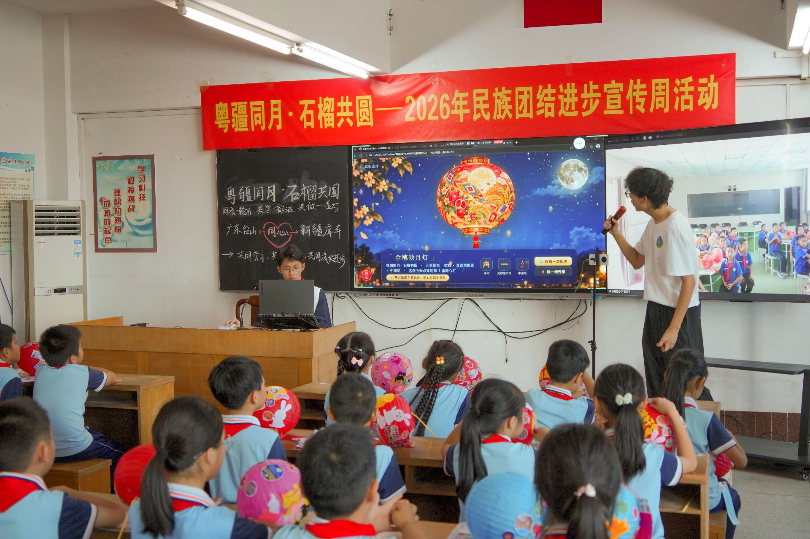
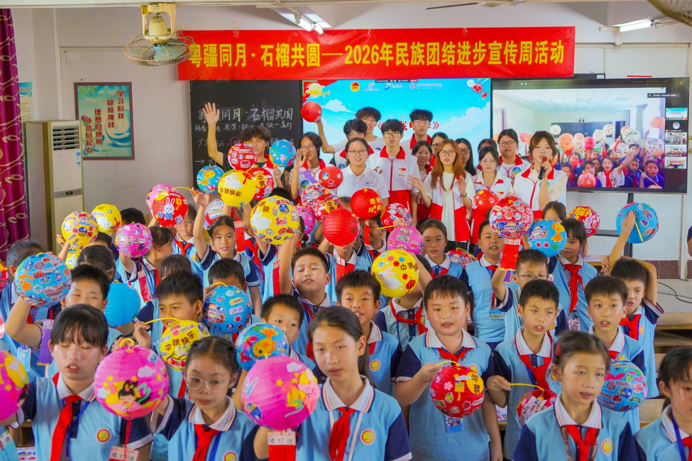
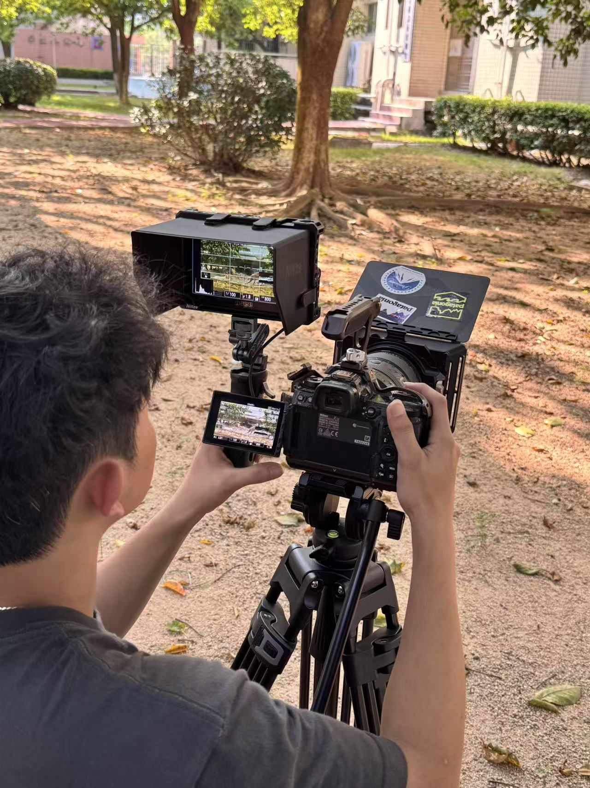
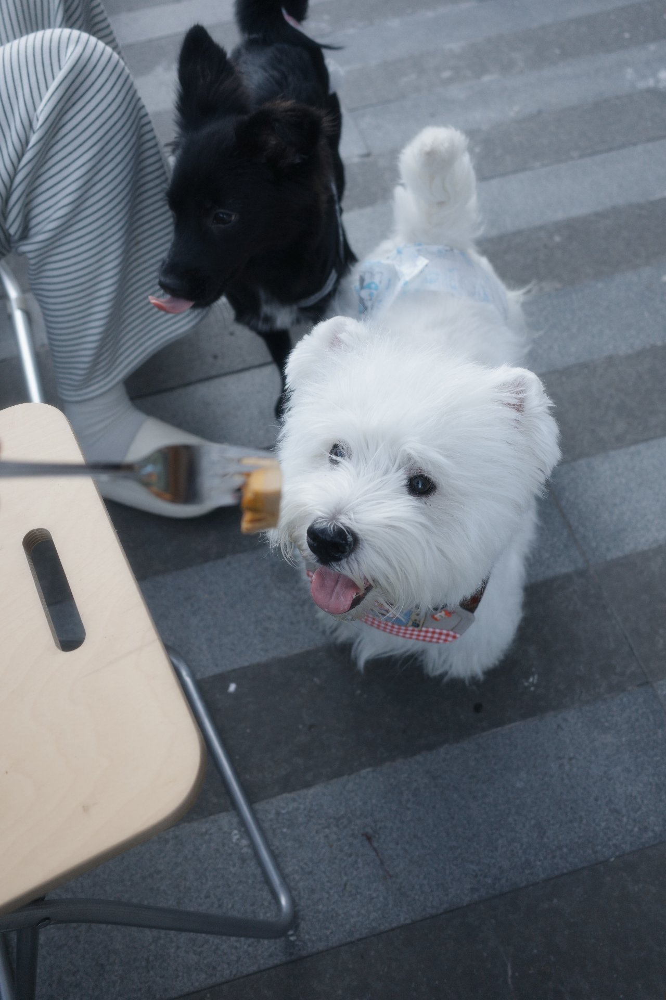
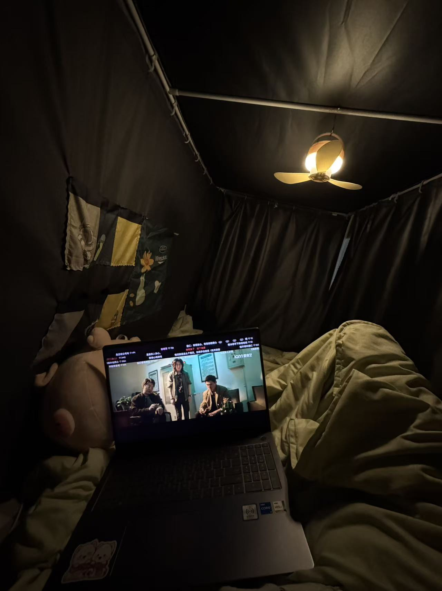
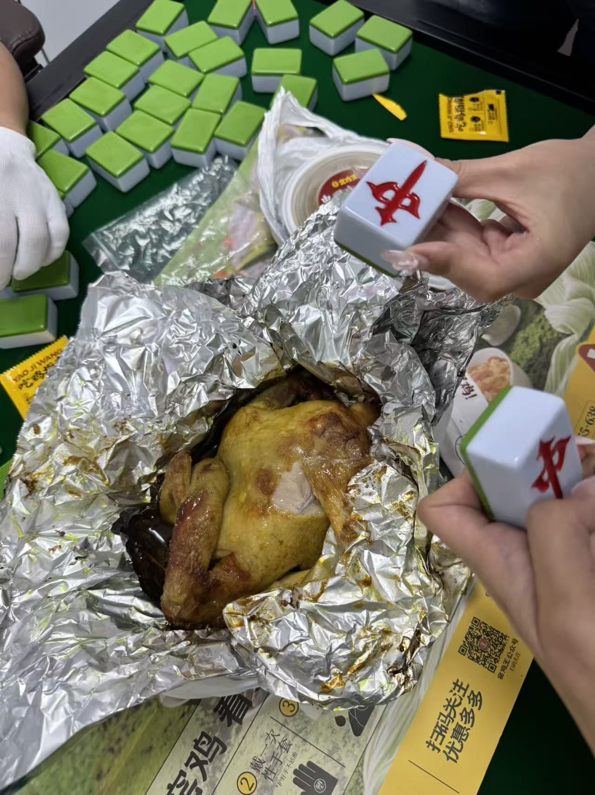
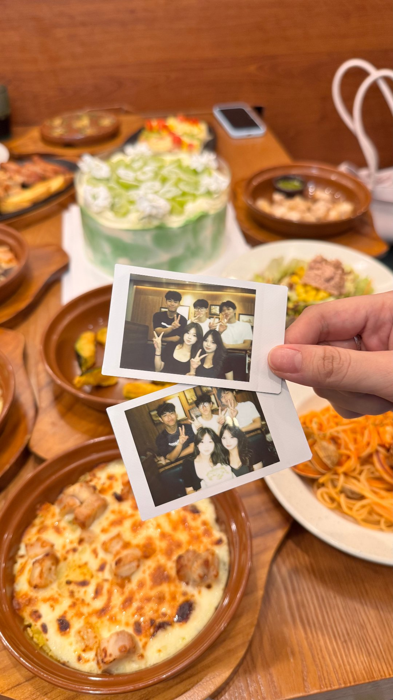

👧 关于我
认识一下这个热爱创作的我
我是余惠欣，就读于广东科学技术职业学院人工智能技术应用（大模型应用开发）专业。热爱数字艺术设计、视觉创作与人工智能技术学习，具备优秀的审美能力、创新思维与团队协作能力。在校期间积极参与学科竞赛与社会实践，斩获多项省级、校级奖项，同时熟练掌握前端网页开发与自动化部署技术，兼具艺术创作能力与计算机技术能力。生活里的我喜欢扛着相机去拍照，也爱窝在床上追剧、和朋友聚会打麻将，还有一只超喜欢的西高地小狗「啤啤」。
🌾 实践纪实 · 粤疆同月
📅 2026年9月24日 · 中秋节｜台山都斛中心小学
中秋月圆之夜，我们带着一堂特别的课走进台山都斛中心小学——「粤疆同月·石榴共圆」民族团结进步宣传周活动。通过双课堂实时连线，广东台山与远隔千里的新疆两地三年级同学同上一节「法治+AI思政课」：同样的月光下，孩子们共赏花灯、同温法治、互道祝福。当科技课堂遇上传统佳节，石榴籽紧紧相拥的模样，就是民族团结最生动的注脚。


📚 学习方向
技术与艺术并行成长
-
前端开发
熟练使用 HTML、CSS 搭建精美静态网页，掌握页面布局、样式美化与适配优化
-
工程部署
掌握 Git 版本管理、GitHub 仓库维护、CI/CD 自动流水线部署流程
-
人工智能
系统学习大模型应用开发、提示词工程、AI 创意辅助设计与内容生成
-
数字媒体
擅长视觉平面设计、海报创作、短视频拍摄、图片精修与后期剪辑
🎓 教育经历
扎实的专业学习之路
广东科学技术职业学院｜人工智能技术应用（大模型应用开发方向）
在校系统学习计算机基础、前端网页开发、人工智能大模型技术、数字媒体设计、视频创作等专业课程，理论基础扎实，实践项目经验丰富。
🌾 社会实践经历
用镜头记录乡村振兴
2026年暑期｜大学生百千万工程“数智乡村青春行”实践团
跟随计算机工程技术学院参与省级百千万工程社会实践项目，全程负责活动拍摄、现场纪实取景、图片筛选、调色精修与后期图文编辑工作。通过镜头记录乡村振兴实践过程，完成大量纪实影像素材的后期优化与整理输出，锻炼了实地拍摄能力、审美修图能力以及团队协作能力，同时获得多项校级以上实践荣誉。
🎈 兴趣爱好
学习之外，热气腾腾的日常
-

📷 摄影
最喜欢的爱好。喜欢扛上相机出门，趴在取景器后面慢慢找构图，用镜头收集生活的光线与故事。
-

🐶 我的电子小狗「啤啤」
很喜欢小动物，尤其是一只叫「啤啤」的西高地——它是我在抖音上最喜欢的电子小狗，每天都要去看看它。
-

📺 追剧时光
最放松的充电方式：窝在床上、开着暖灯，用电脑慢慢看剧，一集接一集停不下来。
-


🀄 朋友聚会
喜欢和朋友热热闹闹地聚在一起：有时候打打麻将，有时候聚个餐，拍立得里全是我们的快乐证据。
🏆 获奖经历
一路竞赛，一路成长
- 省一等奖第14届未来设计师全国高校数字艺术设计大赛｜2026 · 广东赛区
- 省一等奖第二十届中国好创意全国数字艺术设计大赛｜广东赛区
- 校一等奖计算机设计大赛｜数字媒体赛道
- 校二等奖2026年国家安全教育微视频大赛
- 多项表彰大学生百千万工程数智乡村青春行社会实践｜校级实践荣誉
💬 自我评价
一个特别喜欢记录生活的小女孩
我是一个特别喜欢记录生活的小女孩——像前面写的那样，我喜欢用镜头拍下喜欢的瞬间，也会把和朋友们的每次相聚、和小狗啤啤的每个日常都好好收藏起来。慢慢地我发现，摄影教会我用心观察世界，记录让我学会珍惜每一份小小的成长。
当然，我深知自己还有许多不足。未来我会在班级里认真学习，在学院团委的各项工作中踏实历练，多向老师和同学们请教，一步一个脚印地进步——继续做一个热爱记录、热爱生活的人，也成为更好的自己。
—— 余惠欣